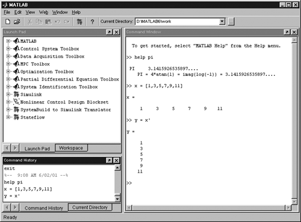

| [ Team LiB ] |
|
M1.1 BackgroundMATLAB is an interactive program for numerical computation and data visualization. It is produced by MATHWORKS, which has the following URL: You can find answers to frequently asked questions (FAQ) on this homepage. Also, there are a number of technical notes that give more information on using many MATLAB features. The MATHWORKS issues a new release of MATLAB every 1–2 years. At the time of the writing of this textbook, the most recent release was MATLAB 6.5 (Release 13). This is the first release since MATLAB 5.2.1 (Release 10) to support the Macintosh (OS 10). The figures presented in this module are from MATLAB 6.1, while much of the rest of the textbook was generated using MATLAB 5.2.1. When you start MATLAB, a desktop similar to that shown in Figure M1-1, with three basic work areas, appears; alternative layouts can be obtained using the "View" pull-down menu. In the upper left corner, when "Launch Pad" is toggled, you will find the MATLAB and SIMULINK toolboxes available with your current MATLAB license. Examples using SIMULINK functions are provided in Module 2. The right-hand work area is known as the command window; this is where most of your MATLAB commands will be entered. It is also the focus of this tutorial module. The lower left work area toggles between the current directory and the history of recent commands that you have entered in the command window. Figure M1-1. MATLAB desktop (Version 6.1, Release 12). This tutorial provides a brief overview of essential MATLAB commands that are entered in the command window. You will learn this material more quickly if you use MATLAB interactively as you are reviewing this tutorial. The MATLAB commands will be shown in the following font style: Monaco font The prompt for a user input is shown by the double arrow (»). MATLAB has an extensive on-line help facility. For example, type help pi at the prompt, » help pi PI 3.1415926535897.... PI = 4*atan(1) = imag(log(-1)) = 3.1415926535897.... so we see that MATLAB has the number p "built in." Notice that although MATLAB reports the function in uppercase letters, lowercase is actually used when entering the function in the command window. |
| [ Team LiB ] |
|